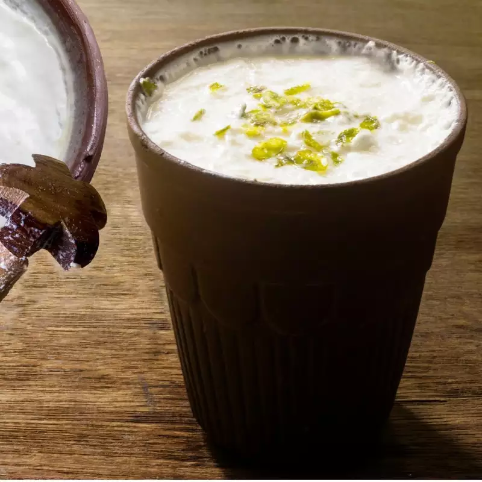

Indian Lassi

Description
Indian Lassi is a refreshing and creamy beverage that originated in the Indian subcontinent. It is made by
blending yogurt with water, sugar, and various flavorings such as fruit (like mango or strawberry), rosewater,
or spices like cardamom. The result is a smooth and cooling drink with a slightly tangy taste, perfect for
quenching thirst and soothing the palate. Lassi is often enjoyed as a refreshing accompaniment to spicy meals or
as a standalone treat on a hot day. It comes in both sweet and savory varieties, offering a delightful range of
flavors to suit different preferences.
Ingredients
- ice cubes
- 1 ¾ cups plain yogurt
- 1 ½ cups ice water
- 6 cubes ice, crushed
- 2 teaspoons white sugar
- 1 pinch salt
Steps
-
In a blender, add the plain yogurt, cold water, sugar, and any optional flavorings such as ground cardamom
or fruit.
- Blend the mixture on high speed until smooth and frothy, usually for about 1-2 minutes. If you prefer a
thicker consistency, you can reduce the amount of water or add more yogurt.
- Taste the lassi and adjust the sweetness or flavorings according to your preference by adding more sugar or
spices if needed.
- If you want a chilled lassi, you can add a few ice cubes to the blender and blend again until the ice is
crushed and the lassi is cold.
-
Once blended to your desired consistency and taste, pour the lassi into serving glasses.
-
Garnish the lassi with a sprinkle of ground cardamom or a few strands of saffron for an extra touch of
flavor and aroma.